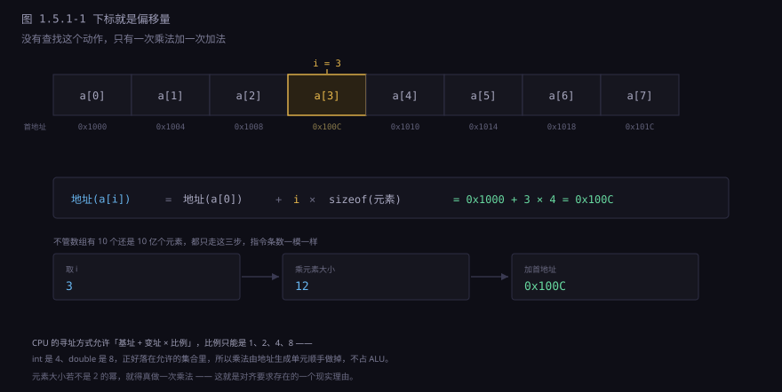
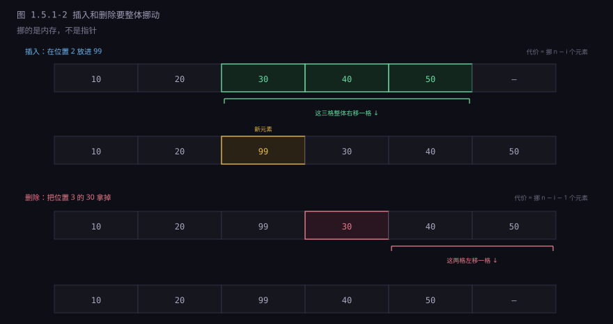
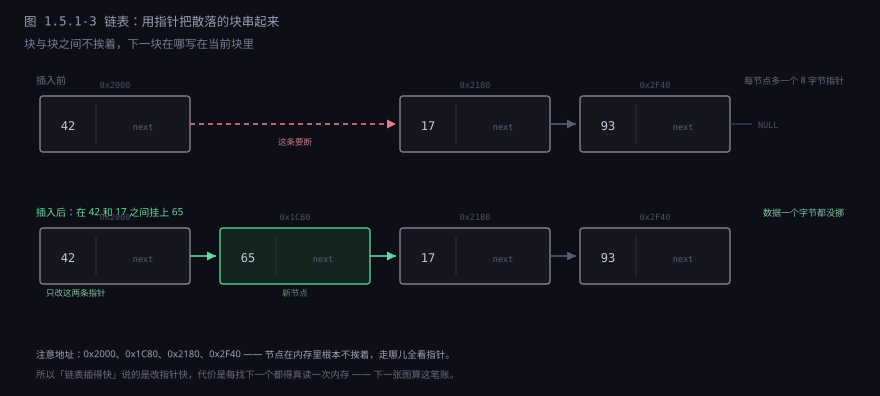
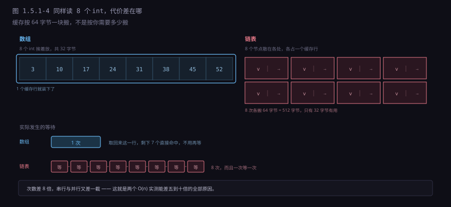
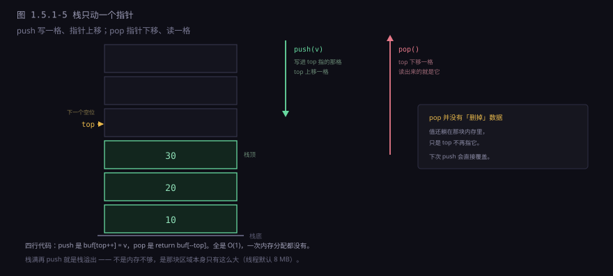
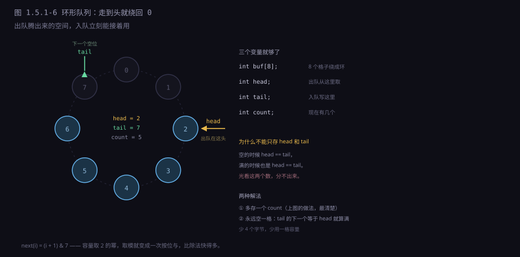

约 0.9 万字 · 6 张图 · 读完你能说清数组的下标为什么能直接算地址， 链表为什么在理论上更快、实际上却常常更慢， 以及栈和队列各自只允许你在哪儿动手
先把「内存」这个词去魅。它不是硬盘那样的文件柜，也不能「往里塞一个对象」。
它是 CPU 能直接寻址的一片字节数组，每个字节有自己的编号，
编号从 0 排到几十亿。CPU 只有两条指令跟它打交道：
load（从某个编号开始，读 1/2/4/8 个字节进寄存器）和
store（把寄存器里的几个字节写到某个编号开始的地方）。
就这两条。没有「读一个结构体」，没有「读一个对象」，没有「读一个字符串」。
所有那些概念都是人给它加的解释：
连续 4 个字节按小端解释是一个 int，
连续 8 个字节可能是一个指针，某个位置开始的若干个字节加上一个长度字段是一个字符串。
机器不认识类型，只认识「从第 N 号格子开始，取几个字节」。
由此得到一个判断数据结构好坏的基本视角： 你要的数据，在格子里散得有多开。 散得越开，取一遍要点名的地方越多，越慢；挤得越紧，一次拿到的越多。 后面所有关于数组和链表的争论，本质上都是这一句话的展开。
数组是最朴素的摆法：n 个元素，一个挨一个，中间不留缝。 既然不留缝，第 i 个元素的位置就能直接算出来：
地址(a[i]) = 地址(a[0]) + i × sizeof(元素)
这个公式里没有循环、没有查找、没有「先看看前一个在哪」。
不管数组有 10 个元素还是 10 亿个元素，算 a[i] 的地址都是
一次乘法加一次加法，指令条数完全一样。
这就是所谓「随机访问 O(1)」的全部内容——不是「很快」，是
「耗时与元素个数无关」。
而且这个乘法在现代 CPU 上常常是免费的。x86 的寻址方式允许 「基址 + 变址 × 比例」这种形式，比例只能是 1、2、4、8：
; int a[100]; in rbx; i in rcx
mov eax, [rbx + rcx*4] ; 一条指令，乘法由地址生成单元顺手做掉
; 不占 ALU，不额外花一个周期
因为 int 是 4 字节，比例正好是 4，编译器一个字都不用多写。
double 是 8，比例 8；short 是 2，比例 2；
char 是 1，连比例都不用写。
元素大小是 2 的幂这件事，就是为了让这条寻址方式能覆盖绝大多数类型。
如果元素是 3 字节、5 字节这种，就得真做一次乘法（imul 或 lea 组合）。

a[100] 在机器看来只是「首地址加 400 字节」，它算得出来，就照读不误——那个位置属于谁，它不知道也不关心。要注意这里有个容易混淆的地方：O(1) 说的是指令条数不变， 不是耗时不变。数组小（比如 1000 个 int，共 4 KB）的时候， 整个数组都在 L1 缓存里，取哪都是四五个周期； 数组大到几百 MB 的时候，随机取一个元素几乎每次都是 cache miss， 要等几十纳秒。
所以「数组随机访问很快」这句话有前提：数组要小到能待在缓存里， 或者你的访问模式有局部性。一个 10 GB 的数组做二分查找， 每次跳到一个随机位置，比链表快不了多少—— 因为二分查找本身就在故意破坏局部性。 这一点后面讲树的时候还会遇到。
既然下标是偏移量，那「第 0 个元素」这个说法就顺理成章了： 它距离数组开头 0 个元素，所以偏移量是 0。 下标在这里不是「第几个」的序数，而是「离起点多远」的距离。 距离当然可以从 0 开始。
流传最广的另一种解释是「从 0 开始能省一次减法，所以更快」。
这个说法在今天的编译器上不成立。假设语言规定从 1 开始，
编译器只要把基址预先减掉一个元素大小（base' = base - 4），
后面照样是 base' + i*4，一次乘法一次加法，不多一条指令。
基址调整是一次性的，摊到每次访问上是零。
所以「省减法」是结果，不是原因。真正的原因是语义上的： 下标表示偏移量，偏移量的原点自然是 0。 1972 年 C 语言这么定，后来 Java、Python、Go、JavaScript 全都跟着， 一部分是因为抄 C，一部分是因为这个理由本身就站得住。
1982 年 Dijkstra 写过一份很短的备忘录，从另一个角度论证了同一件事：
表示一个范围时，用「左闭右开」写成 0 ≤ i < N
比「两端都闭」写成 1 ≤ i ≤ N 更好——
因为空范围能自然写成 0 ≤ i < 0，
相邻两段能直接首尾相接，长度就是上界减下界，不用 +1。
这跟性能无关，是记号本身的整洁。
两个理由指向同一个答案，但别把它们混成一个。
nil 表示「没有」，所以腾得出手来从 1 开始。
连续的好处是算得快、取得整。代价也来自连续： 你不能在中间插东西，除非把后面的都往后推。
往 a[3] 的位置插一个新元素，得先把 a[3] 到
a[n-1] 整体后移一格，再把新值写进空出来的位置。
平均要挪 n/2 个元素，最坏挪 n 个。删掉一个元素同理，要往前补。
所以数组的插入删除是 O(n)，而 n 是「后面的元素个数」。

memmove 是顺序读写，每一段都是 cache 命中的连续访问，带宽能跑到每秒几十 GB。挪 1 万个 int（40 KB）大约几微秒——比链表里跳 1 万次指针还快。这是后面那个反直觉结论的伏笔。
第二个代价是扩容。数组一旦分配，长度就定了。
装满了还要往里放，只能找一块更大的地方，把老数据整个搬过去，再释放老地方。
C 的 realloc、C++ 的 vector::push_back、
Java 的 ArrayList、Python 的 list、
Go 的 slice，全都在做这件事。
它们用的办法叫成倍扩容：容量不够时，新容量取原来的 1.5 倍或 2 倍， 而不是「刚好够用」。 原因是一道简单的算术。如果每次只加 1，插 n 个元素要搬 1 + 2 + 3 + … + n 次，总共 O(n²)； 如果每次翻倍，搬的次数是 1 + 2 + 4 + … + n，总共不到 2n，摊到每次插入是 O(1)。 「摊还 O(1)」这个词就是这么来的：单次可能很贵（搬 100 万个元素）， 但平均下来便宜，因为贵的次数呈几何级数减少。
代价是内存可能浪费将近一半：容量 100 万、实际只用了 50 万零 1 个的时候，
剩下 50 万是空的。这就是所有动态数组都要面对的取舍，
不同的库在「浪费多少」和「搬几次」之间选不同的点。
Java 的 ArrayList 选 1.5 倍，C++ 的 vector 通常选 2 倍，
Go 的 slice 在小的时候翻倍、大了以后逐渐降到 1.25 倍——
因为大数组搬一次的代价太高，宁可多浪费点空间也要少搬。
链表的思路正相反：每个元素单独占一块地方，块与块之间不挨着， 每块里存一个指针指向下一块。
struct node {
int value; // 载荷
struct node *next; // 下一块在哪
};
插入就简单了：想在 A 和 B 之间插一个 N，
把 A 的 next 指到 N，把 N 的 next 指到 B。
两条赋值，跟链表有多长完全无关。删除同理，把前一个的
next 跳过被删的那个。不用挪任何数据。

但这里有个被无数教材含糊过去的前提： 「链表插入是 O(1)」说的是你已经站在要插入的位置上。 如果只知道「在第 500 个元素后面插入」，你还是得从头一个一个数过去， 那一步是 O(n)。 真正 O(1) 的操作是「在已知节点 A 的后面插入」—— 前驱节点的指针得先到手。
这就是为什么链表很少单独用。实际系统里它总是跟别的东西配着用： 哈希表的每个桶用链表串冲突项（因为桶的头部指针是现成的）、 LRU 缓存用双向链表（因为哈希表能直接给出节点位置）、 文件系统的空闲块用链表管（因为只需要「摘一个下来」和「挂一个上去」）。 链表的价值在于「摘挂」，不在于「查找」。
常见的几个变体，各有各的用处：
| 变体 | 多存什么 | 换来什么 | 典型用途 |
|---|---|---|---|
| 单链表 | 一个 next |
最省内存 | 哈希桶、栈、队列 |
| 双向链表 | next 加 prev |
给定节点能 O(1) 删除（不用找前驱） | LRU、编辑器的行 |
| 循环链表 | 尾节点的 next 指回头 |
没有「到头了」的边界情况 | 轮转调度、约瑟夫环 |
| 带哨兵 | 一个不存数据的头节点 | 插入删除不用判「是不是第一个」 | 几乎所有正经实现 |
最后一行值得多说一句。「在头部插入」和「在中间插入」在代码上本来是两个分支：
前者要改链表头指针，后者改前驱的 next。
加一个空的哨兵节点顶在最前面，头插就变成了「在哨兵后面插」，
跟中间插入走完全一样的代码，分支消失。
省掉的不是那一次判断的时间，是那份容易写错的分支。
Linux 内核的链表、Java 的 LinkedList 实现里都有这个手法。
理论讲完了，现在讲实际。同样遍历一个有 100 万个 int 的容器，
数组和链表差多少？
在纸面上两者都是 O(n)，都是「每个元素看一次」。
在真机上，数组大约 1 毫秒，链表常常是 5 到 10 毫秒。
差距不在指令条数——链表每步也就多一条取 next 的指令——
而在取 next 这件事必须等上一次取完才能开始。
数组：地址是算出来的
a[0] → a[1] → a[2] → ……
下一块在哪，现在就知道，不用等。
而且它们是挨着的，CPU 一次取 64 字节，白送 15 个 int。
链表：地址是读出来的
读 p->next → 才知道下一块在哪 → 才能去读它
每一次都要等上一次的结果，这叫「地址依赖链」。这两句话的差别，在现代 CPU 上被放大成了两个独立的惩罚。
第一，预取器失效。 CPU 里有个硬件单元专门猜「你接下来要读哪儿」，猜中就提前把数据搬进缓存， 等你真要用的时候已经躺在那儿了。它的猜法很朴素： 看到你按固定步长往前走，就顺着往下取。数组完美符合——步长就是元素大小。 链表不符合：下一个节点的地址藏在当前节点里， 预取器读不到那个值（它只观察地址序列，不理解内存里的内容）， 只能干等。这是结构性的，不是调优能解决的。
第二，缓存行浪费。
缓存和内存之间不是按字节搬的，是按 64 字节一块搬的，这一块叫缓存行。
数组里 16 个 int 挤在一个缓存行里，取一个等于顺带取了 15 个，
后面 15 次访问全部命中。
链表里每个节点只存一个 int 加一个指针，
但为了这 4 字节有效数据，你得搬整个 64 字节的缓存行，其中 60 字节是别人的东西。
带宽利用率不到 10%。

还有第三笔账，很多人忘了算：节点本身的开销。
在 64 位系统上，一个存 int 的链表节点，
由于指针要 8 字节对齐，实际占 16 字节（4 字节数据 + 4 字节填充 + 8 字节指针）。
有效载荷只占 25%。同样存 100 万个整数，数组占 4 MB，链表占 16 MB。
多出来的 12 MB 不只是浪费内存，还让缓存更装不下——
本来能装下 4 万个元素的 L2，现在只能装 1 万个。
Java 的 LinkedList 更夸张：每个节点是一个对象，有 16 字节对象头，
加三个引用字段（item、next、prev），
压缩指针开启时约 32 字节存一个元素。
存 100 万个 Integer，数组方案（ArrayList）占 4 MB 引用加共享的
Integer 对象，链表方案光节点就 32 MB。
这就是那句流传很广的话的来历——
在 Java 里，LinkedList 几乎总是错误的选择。
把上面几节的账合起来，可以得到一个反直觉但站得住的结论：
除非你确实需要「O(1) 摘挂」，否则数组几乎总是更好。
注意这个结论的范围。它不是说链表没用了，是说链表最出名的那个优点 「插入删除 O(1)」，在日常代码里被高估了。原因有三层。
第一层，那个 O(1) 的前提（已经拿到前驱指针）在多数场景下不成立。 你要删的是「值为 42 的那个元素」，那就得先找到它，O(n) 的查找把 O(1) 的删除抵掉了。
第二层，就算前提成立，数组的「挪」也没那么贵。
挪 1 万个 int 是 40 KB 的连续内存拷贝，走的是 memmove，
内部是一条 SIMD 指令搬 32 或 64 字节，带宽接近内存带宽上限。
而链表的「O(1) 插入」虽然只改两个指针，但那两个指针分散在两个不同的缓存行里，
如果恰好都不在缓存，两次 miss 就是一百多纳秒。
一个挪一万个元素，一个摸两次内存，有时候后者更慢。
第三层，遍历。这是最常见的操作，也是链表输得最惨的地方。 上面算过，差 5 到 10 倍。
那什么时候链表真的赢？三种情况，都很具体：
| 场景 | 为什么链表赢 |
|---|---|
| 元素很大（几 KB），且频繁在中间插删 | 数组每插一次要挪几 KB 乘以元素个数，链表只改指针；元素大到缓存装不下时，数组的局部性优势也没了 |
| 长度未知、增长无法预估，且不能容忍扩容时的长暂停 | 数组扩容要一次性搬走全部数据，几百万元素时会有毫秒级卡顿；链表每次只分配一个节点，延迟平滑 |
| 要把同一批数据同时挂在多个容器里 | 一个节点可以有多组 next/prev，同时属于多个链表（Linux 内核的 list_head 就是这么用的），数组做不到 |
反过来说，绝大多数业务代码里的「我需要频繁插入删除所以用链表」都是想当然了。 真实的瓶颈往往在查找，而查找链表是 O(n)。 先用数组，测出来不够快再换，这个顺序几乎不会错。
前面两种结构管的是「怎么摆」，栈和队列管的是另一件事： 允许你在哪儿动手。
栈的规则只有一句：只能在一端插入，也只能在同一端删除。 这一端叫栈顶。后进去的先出来，所以叫 LIFO。 因为只在一端动，不需要任何查找，也不需要挪任何东西—— 实现上就是一个数组加一个「栈顶在哪」的整数。
int buf[1024];
int top = 0; // 指向下一个空位
void push(int v) { buf[top++] = v; }
int pop(void) { return buf[--top]; }
int peek(void) { return buf[top - 1]; }
四行代码，全部 O(1)，而且没有一次内存分配。
push 就是「写一格，指针加一」，pop 就是「指针减一，读一格」。
CPU 甚至专门为它做了指令：push 和 pop 会顺手改
rsp，一条指令干完两件事。

top 不再指向它，下次 push 会把它覆盖掉。这也是为什么读到已弹出的栈内容会拿到脏数据。栈最出名的用途是函数调用。 每次调用，把返回地址、参数、局部变量压进栈；返回时弹出去，栈顶自动回到调用前的位置。 用同一个栈顶指针维护「当前执行到哪一层」，比任何显式的层级管理都简单。 1.3.3 那节讲过的调用栈、栈帧、递归，都是这个结构在撑着。
它还有几个不太起眼但到处都在用的场合：
表达式求值。 把中缀表达式转成后缀（逆波兰式），再用一个操作数栈算——这是编译器的标准做法， 也是你按计算器时它内部在做的事。
括号匹配。 遇到左括号压栈，遇到右括号弹栈并检查类型是否对得上。 最后栈空就是配平了。JSON 解析器、HTML 解析器、编译器的语法分析，全靠这个。
撤销。 每个操作压栈，Ctrl+Z 弹一个出来反向执行。注意这里要的是「反向执行」而不是「恢复快照」， 所以压进去的是操作本身（命令模式），不是整个文档的状态—— 否则内存会爆。
栈的失败方式也很统一：满了。 固定大小的栈在 push 到顶时会溢出；改用动态数组会碰到扩容； 而系统给每个线程的调用栈通常有硬上限（Linux 默认 8 MB）， 递归太深就撞上去了，这就是「栈溢出」。 它不是因为内存不够——机器还有几个 GB 空着—— 是因为那块栈区域本身只有那么大。
队列的规则是：在一端插入，在另一端删除。 先进先出，FIFO。听起来只比栈多了一条规则，实现上却多了一个麻烦。
照抄栈的做法，用一个数组加两个指针：head 指向队首，tail 指向队尾。
入队时 buf[tail++] = v，出队时 return buf[head++]。
看起来完美，但跑一会儿就出问题：
head 和 tail 只增不减，一起往右走。
走到数组末尾的时候，tail 顶到边界，明明前面还有一大片空位
（因为出队腾出来的），却入不了队了。
这叫假溢出。空位在，只是不在你能用的方向上。
解决办法有两个。笨办法是「整体左移」：一旦 tail 到底，就把
head 到 tail 之间的数据挪回开头。
这么做能用，但每隔一段时间就要挪一次，均摊下来还是 O(1)——
只是那个「每隔一段时间」不可预测，实时系统不喜欢。
正经办法是让它绕圈：把数组当成一个首尾相接的环。
tail 走到末尾就回到 0，head 同理。
取下一个位置时用取模——或者更省事的办法：因为容量是 2 的幂，
可以用按位与代替取模，(i + 1) & (CAP - 1)。
#define CAP 8 // 必须是 2 的幂
struct ring {
int buf[CAP];
int head; // 队首，出队位置
int tail; // 队尾，入队位置
int count; // 当前元素个数
};
int next(int i) { return (i + 1) & (CAP - 1); }
int full(struct ring *q) { return q->count == CAP; }
int empty(struct ring *q) { return q->count == 0; }
void enqueue(struct ring *q, int v) {
q->buf[q->tail] = v;
q->tail = next(q->tail);
q->count++;
}
int dequeue(struct ring *q) {
int v = q->buf[q->head];
q->head = next(q->head);
q->count--;
return v;
}
head == tail，这两种情况一模一样，所以要么多存一个 count（上图的做法），要么永远空一格不用。
最后那句是环形队列最经典的坑。只用 head 和 tail 两个变量的话，
队列空的时候两者相等，队列满的时候两者也相等——分辨不出来。
两种解法：多存一个计数器（最清楚，也是上面代码的做法），
或者约定「tail 的下一个位置如果等于 head，就算满」，
代价是永远浪费一格。
前者多 4 个字节，后者少用一格容量，都不贵，但必须选一个，不能含糊。
队列在系统里的地位比栈更「基础」一些，因为它是解耦的工具。 生产者往里放，消费者往外取，两边不需要互相等待，也不需要知道对方是谁。 键盘输入、网络包、任务调度、消息队列、打印队列、日志缓冲—— 凡是「一方产生得快、另一方处理得慢」的地方，中间都会垫一个队列， 让快的那个不至于被慢的拖住（或者反过来）。
多线程场景下还有个额外要求：队空时消费者不能空转。
空转（busy wait）会白烧一个核，所以要有「等待队列」——把消费者挂起，
有数据时再唤醒。这一步就要牵扯到操作系统的调度器，
也正是「无锁队列」这类东西存在的理由：
用原子的 head/tail 比较交换，把锁的代价省掉。
回头看这四个，会发现它们的差别并不在「存什么」，而只在 允许在哪些位置插入和删除：
| 结构 | 能在哪儿插 | 能在哪儿删 | 取出的顺序 |
|---|---|---|---|
| 数组 | 任意位置 | 任意位置 | 按下标，随机 |
| 链表 | 任意位置 | 任意位置 | 按链接顺序，从头到尾 |
| 栈 | 只有一端 | 同一端 | 后进先出 |
| 队列 | 一端 | 另一端 | 先进先出 |
限制越多，能做的优化就越多。数组和链表什么位置都允许，所以取的时候要算、要找； 栈只允许在一端动，所以连「位置」这个概念都可以退化成一个整数； 队列稍宽一点，就有了绕圈这种技巧。 「限制」不是缺点，是换取速度的筹码。
还有两个近亲值得一提。双端队列（deque）两端都能插能删，
是栈和队列的超集，C++ 的 std::deque、Python 的 collections.deque
都是它——实现通常是「一块块定长数组 + 一个指针数组索引这些块」，
兼顾了随机访问和两端操作。
优先队列则是「每次取出最大的/最小的」，实现靠堆，
那是 1.5.3 讲树的时候的事。
不看复杂度表，看实际要做的操作。下面这几条足够应付绝大多数选择：
| 你的情况 | 选什么 | 为什么 |
|---|---|---|
| 元素个数基本确定，主要是遍历和按下标取 | 数组 | 没有比这更快的了，缓存全命中 |
| 个数不定，主要是尾部追加 | 动态数组 | 摊还 O(1)，只有扩容那一下慢 |
| 个数不定，而且头尾都要加 | deque | 两头都是 O(1)，不用整体挪 |
| 频繁在中间插删，且元素很大（几百字节以上） | 链表 | 这时挪数据的代价超过指针跳转 |
| 要按「最近使用」顺序淘汰 | 哈希表 + 双向链表 | 哈希表定位，链表管顺序（LRU 的标准做法） |
| 要「最后进来的先处理」 | 栈 | 深度优先、括号匹配、撤销 |
| 要「先进来的先处理」，且吞吐高 | 环形队列 | 零分配、零挪动，能做成无锁 |
| 要按值快速查找 | 都不是，见 1.5.2 | 这四个结构查一个值都得 O(n) |
最后一行是重点。数组和链表能 O(1) 或接近 O(1) 做到的，都是 「按位置取」；一旦变成「按内容找」，全都退化成从头扫到尾。 一百万个元素里找一个，最坏要看一百万次。 下一节要讲的哈希表，就是为了把「按内容找」也变成 O(1)。
四种结构都很简单，简单到让人觉得「数据结构就这么回事」。 但真实的系统里，它们几乎从来不被单独使用，原因有三个。
一是查找。 按内容找、按范围找、找「最接近的那个」，这四个都做不到。 数据库要按主键找一行、要按时间范围取一段、要按名字前缀匹配， 这些需求逼出了哈希表、B 树、跳表。
二是并发。
数组扩容要搬整个数组，链表改指针要改两个字段，队列的 head 和 tail
要一起更新——没有一个能在多线程下直接安全使用。
真要做并发容器，得在它们之上加锁、加原子操作、加内存屏障，
复杂度会翻好几倍。这也是为什么 JDK 里
ConcurrentHashMap 的实现跟教科书上的哈希表差得那么远。
三是持久化。 这些结构全在内存里，进程一死就没了。要存到磁盘上， 得考虑「一次磁盘读写是 4 KB 起」，指针变成文件偏移量， 还得对付「写到一半断电」这种中途状态。 数据库的那些索引结构，本质上都是「为磁盘重新设计的树」。
所以这一节的位置是地基：后面所有结构——哈希表、树、图、数据库索引、 缓存淘汰策略——都是在这四种摆法上做加法。 加法加在哪儿，取决于你要优化哪个操作。 看清楚一个结构在优化什么、又在牺牲什么，比记住它的名字有用得多。